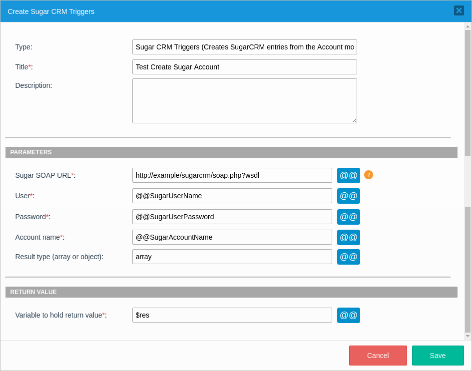
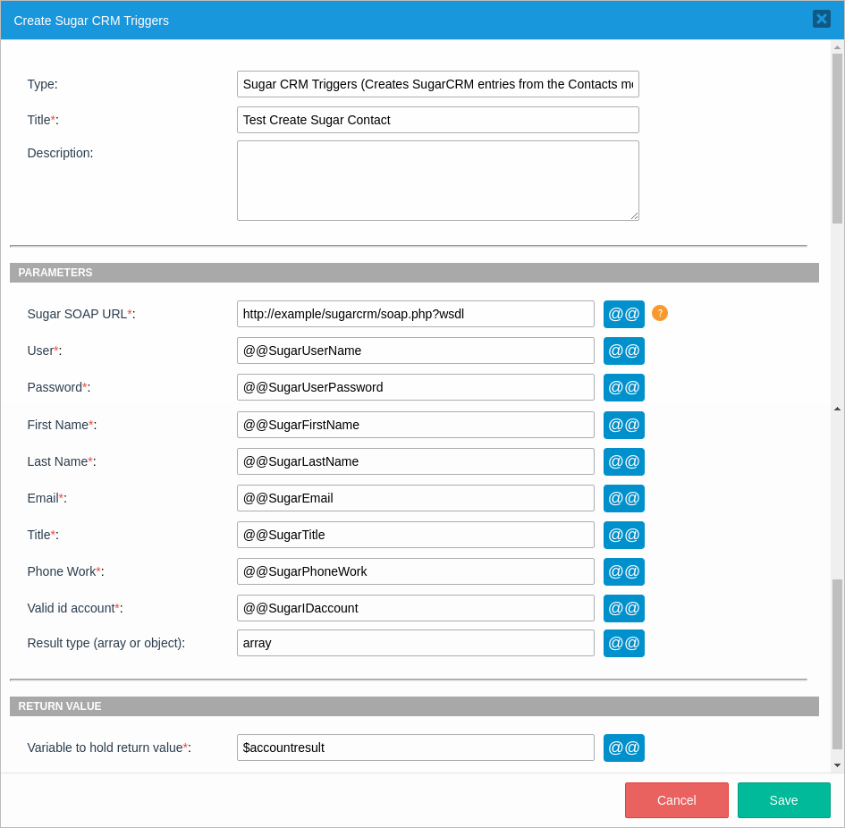
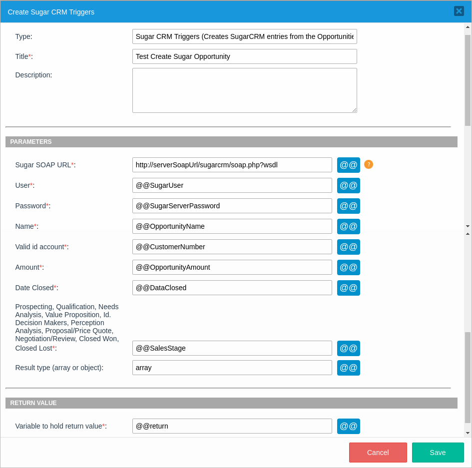
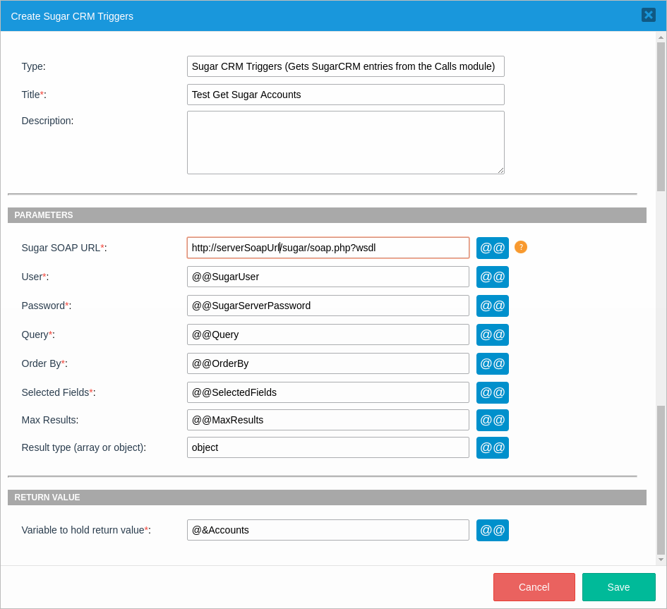
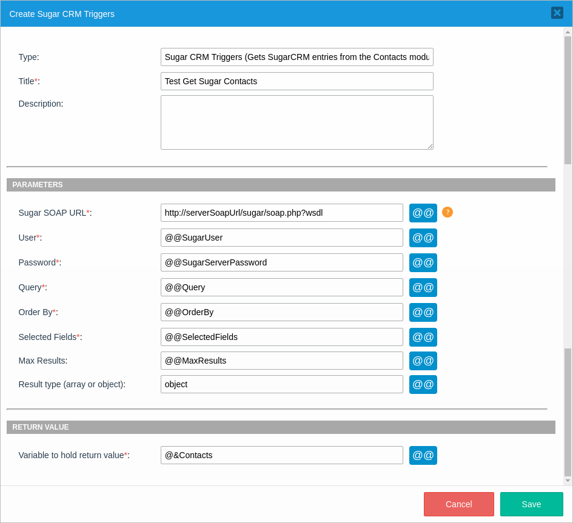
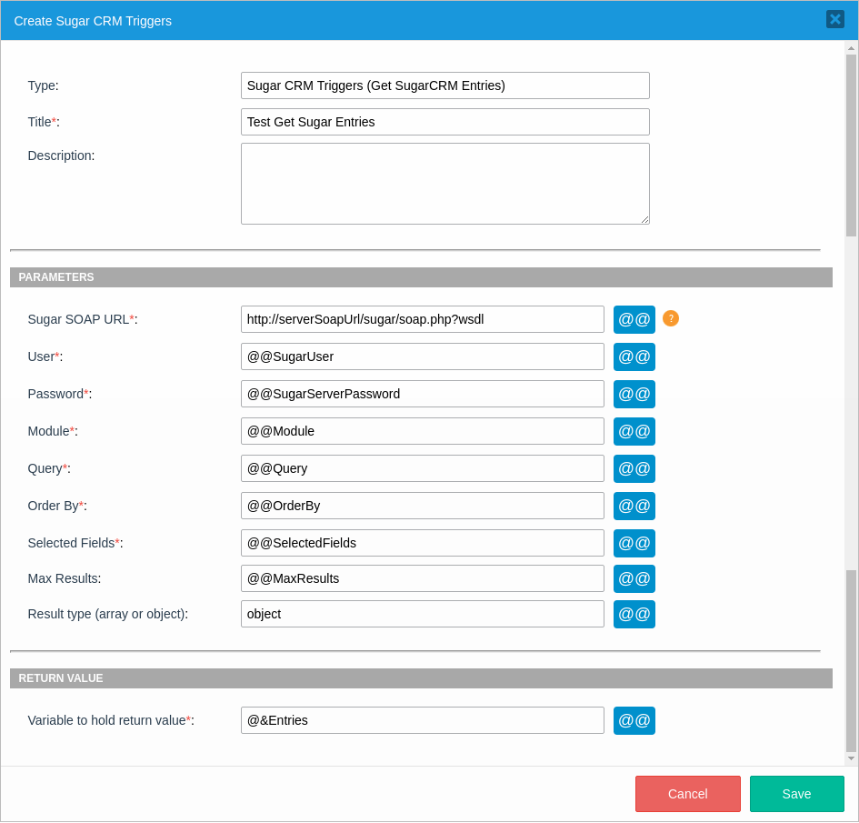

Overview
Warning: The Sugar CRM Triggers wizard is being deprecated.
SugarCRM is a web-based customer relations management (CRM) tool that facilitates the use of customer support, marketing and sales business roles by bringing them together under a unified software system. This allows customer relations specialists to quickly and efficiently deal with a wide range of customer demands.
Although SugarCRM can be accessed through a website, its functionalities have been integrated with ProcessMaker, meaning that users can manage SugarCRM modules from within ProcessMaker through a web service connection.
The communication between ProcessMaker and SugarCRM application can be successfully created using the 11 triggers added within ProcessMaker; amongst those we can find:
- Create Sugar accounts, contacts, leads and opportunities.
- Get Sugar accounts, calls, contacts, entries, entry, leads and opportunities.
Each one of them are explained in detail in the guide below.
How it works
In the image below, you can see the option to create SugarCRM triggers from ProcessMaker (For example create an account), which affects directly to the SugarCRM Environment.

But, what do we need in order to create SugarCRM triggers in ProcessMaker?. As we mentioned before, the communication can be achieved using SugarCRM web services, so make sure you have a valid web service URL. A valid URL has the following structure:
Depending on the Sugar installation some will have the web service inside a folder:
Just to make sure, copy the link in a web browser and you must have the XML definition for the web service:

Requirements
- ProcessMaker v. 3.0 and later
- SugarCRM v. 6.5.x and later
Glossary
Source: http://forums.sugarcrm.com
Account
A record representing a customer or a business. An account contains information such as the customer’s name, address and phone number.
Contact
A person who may be associated with a possible sales opportunity or with an account.
Lead
An early contact in the sales process who has not yet been evaluated or qualified to be a contact.
Opportunity
A specific selling opportunity or sales deal that you have identified and qualified. Opportunities progress through sales stages such as Qualification, Negotiation and Closed Won, and have an amount and an expected close date associated with them for purposes of forecasting the amount of sales that will close during a time period.
SugarCRM Triggers
ProcessMaker works with the following SugarCRM Triggers:
CreateSugarAccount()CreateSugarContact()CreateSugarLeads()CreateSugarOpportunity()GetSugarAccount()GetSugarCalls()GetSugarContacts()GetSugarEntries()GetSugarEntry()GetSugarLeads()GetSugarOpportunities()
CreateSugarAccount()
CreateSugarAccount(): Creates SugarCRM entries from the Account module.
Function Definition
Parameters
sugarSoap:Sugar SOAP URL. For example: http://www.example.com/sugar/soap.php?wsdluser:User name who is used to log on SugarCRM.password:Password which corresponds to the user name given in a previous field.name:Give the account a name to have it created in SugarCRM.resultType:The result could be either an array or an object with the list of all account elements.
Return Value
The variable to hold return value returns the Sugar Account ID.
Example: Follow the next steps to implement the CreateSugarAccount() trigger in ProcessMaker. Let's create a Sugar account from information filled in a ProcessMaker Dynaform:
Create the Dynaform based on the trigger parameters, since those variables will be used in the trigger. Depending on your process design, and the permission your users have over your Sugar server information, you can create Dynaform fields, Sugar User and Sugar Server Password as the image shown, to let your users fill those fields with your Sugar Server information. If you do not want to give that information to your users, you can fill the information of both fields inside your trigger.
Create the trigger by going to Triggers > Wizard > SugarCRM triggers.
Click over Creates SugarCRM entries from the Account module and you see the following trigger definition:

If you click Edit Source Code, you see the following definition to add some additional code:
$res = CreateSugarAccount("http://example/sugarcrm/soap.php?wsdl", @@SugarUserName, @@SugarUserPassword, @@SugarAccountName, "array");Note: If you edit the trigger source code, then you won't be able to come back to the trigger definition.
Add the trigger after the Dynaform.
Run your process and fill the information in the Dynaform:

After clicking the Create Account button, the account is created. To verify this login in SugarCRM, go to the Accounts tab, you will see the account created:

CreateSugarContact()
CreateSugarContact(): Creates SugarCRM entries from the Contacts module.
Function Definition
Parameters
sugarSoap:Sugar SOAP URL. eg. http://www.example.com/sugar/soap.php?wsdluser:User name who is used to log on SugarCRM.password:Password which corresponds to the user name given in a previous field.first_name:Give the contact a first name.last_name:Give the contact a last name.email:Add a contact's email.title:Add the contact's job title.phone:Add the contact's phone number.account_id:Add a valid customer number.resultType:The result could be either an array or an object with the list of all contact elements.
Return Value
The variable to hold return value returns the created contact.
Example: Follow the next steps to implement the CreateSugarContact() trigger in ProcessMaker. Let's create a Sugar account from information filled in a ProcessMaker Dynaform:
Create the Dynaform based on the trigger parameters, since those variables will be used in the trigger. Depending on your process design and the permission your users have over your Sugar server information, you can create Dynaform fields, Sugar User and Sugar Server Password as the image shown, to let your users fill those fields with your Sugar Server information. If you do not want to give that information to your users, you can fill the information of both fields inside your trigger.
Create the trigger by going to Triggers > Wizard > SugarCRM triggers.
Click over Creates SugarCRM entries from the Contacts module and you see the following trigger definition:

If you click Edit Source Code, you see the following definition to add some additional code:
$accountresult = CreateSugarContact("http://example/sugarcrm/soap.php?wsdl", @@SugarUserName, @@SugarUserPassword, @@SugarFirstName, @@SugarLastName, @@SugarEmail, @@SugarTitle, @@SugarPhoneWork, @@SugarIDaccount, "array");Note: If you edit the trigger source code, then you won't be able to come back to the trigger definition.
Add the trigger after the Dynaform.
Run a case and fill the information in the Dynaform:

After clicking the Create Account button, the contact is created. To verify this login in SugarCRM, go to the Contacts tab, you will see the user you've created, in this example John Smith was created successfully:

CreateSugarLeads()
CreateSugarLeads(): Creates SugarCRM entries from the Leads module.
Function Definition
Parameters
sugarSoap:Sugar SOAP URL. eg. http://www.example.com/sugar/soap.php?wsdluser:User name who is used to log on SugarCRM.password:Password which corresponds to the user name given in a previous field.first_name:Give the contact a first name.last_name:Give the contact a last name.email:Add a contact's email.title:Add the contact's job title.phone:Add the contact's phone number.account_id:Add a valid customer number.resultType:The result could be an array or an object with the list of all lead elements.
Return Value
The variable to hold return value returns the creation of a sugar lead.
Example: Follow the next steps to implement the CreateSugarLeads() trigger in ProcessMaker. Let's create a Sugar lead from information filled in a ProcessMaker Dynaform:
Create the Dynaform based on the trigger parameters, since those variables will be used in the trigger. Depending on your process design, and the permission your users have over your Sugar server information, you can create Dynaform fields, Sugar User and Sugar Server Password as the image shown, to let your users fill those fields with your Sugar Server information. If you do not want to give that information to your users, you can fill the information of both fields inside your trigger.
Create the trigger by going to Triggers > Wizard > SugarCRM triggers.
Click over Creates SugarCRM entries from the Leads module and you see the following trigger definition:
If you click Edit Source Code, you see the following definition to add some additional code:
@@return = CreateSugarLeads("http://example.com/sugarcrm/soap.php?wsdl", @@SugarUserName, @@SugarUserPassword, @@SugarFirstName, @@SugarLastName, @@SugarEmail, @@SugarTitle, @@SugarPhoneWork, @@SugarCustomerNumber, "array");Note: If you edit the trigger source code, then you won't be able to come back to the trigger definition.
Add the trigger after the Dynaform.
Run a case and fill out the Create Sugar Lead Dynaform:

After clicking the Create The Lead button, the lead is created. To verify this, login in SugarCRM. Go to Leads tab, you will see the user you've created, in this example Elizabeth Brown was created successfully:

CreateSugarOpportunity()
CreateSugarOpportunity(): Creates SugarCRM entries from the Opportunities module.
Function Definition
Parameters
sugarSoap:Sugar SOAP URL. eg. http://www.example.com/sugar/soap.php?wsdluser:User name who is used to log on SugarCRM.password:Password which corresponds to the user name given in a previous field.name:Opportunity Name.account_id:Add a valid customer number.amountIntroduce the opportunity amount.date_closedDefine the date when the opportunity was closed.sales_stageChoose amongst one of the stages: Prospecting, Qualification, Needs Analysis, Value Proposition, Id. Decision Makers, Perception Analysis, Proposal/Price Quote, Negotiation/Review, Closed Won, Closed Lost.resultTypeThe result could be an array or an object with the list of all opportunity elements.
Return Value
The variable to hold return value returns the creation of a Sugar Opportunity.
Example: Follow the next steps to implement the CreateSugarOpportunity() trigger in ProcessMaker. Let's create a Sugar lead from information filled in a ProcessMaker Dynaform:
Create the Dynaform based on the trigger parameters, since those variables will be used in the trigger. Depending on your process design, and the permission your users have over your Sugar server information, you can create Dynaform fields, Sugar User and Sugar Server Password as the image shown, to let your users fill those fields with your Sugar Server information. If you do not want to give that information to your users, you can fill the information of both fields inside your trigger.
Create the trigger by going to Triggers > Wizard > SugarCRM triggers.
Click over Creates SugarCRM entries from the Leads module and you see the following trigger definition:

If you click Edit Source Code, you see the following definition to add some additional code:
@@return = CreateSugarOpportunity("http://serverSoapUrl/sugarcrm/soap.php?wsdl", @@SugarUser, @@SugarServerPassword, @@OpportunityName, @@CustomerNumber, @@OpportunityAmount, @@DataClosed, @@SalesStage, "array");Note: If you edit the trigger source code, then you won't be able to come back to the trigger definition.
Add the trigger after the Dynaform.
Run a case and fill out the Create Sugar Opportunity Dynaform:

After clicking the Submit button, the opportunity is created. To verify this, login in SugarCRM. Go to Opportunities tab, you will see the new opportunity created:

GetSugarAccount()
GetSugarAccount() gets SugarCRM entries from the Account module.
Function Definition
Parameters
sugarSoap:Sugar SOAP URL. For example: http://www.example.com/sugar/soap.php?wsdluser:User name who is used to log on SugarCRM.password:Password which corresponds to the user name given in a previous field.query:The SQL WHERE clause without the wordwhere.orderBy:The SQL ORDER BY clause without the phraseorder by.selectedFields:A list of fields to include in the results.maxResults:The maximum number of results to return. It is 50 by default. This parameter is optional.resultType:The result could be an array or an object with the list of all account elements. This parameter is optional.
Return Value
The variable to hold return value returns an array/object of the Sugar accounts.
Example: Follow the next steps to implement the GetSugarAccount() trigger in ProcessMaker:
Create the trigger by going to Triggers > Wizard > SugarCRM triggers.
Click over Gets SugarCRM entries from the Account module and you see the following trigger definition:

After saving the new Sugar trigger, if you click Edit Source Code, you see the following definition to add some additional code:
@&Accounts = GetSugarCalls("http://serverSoapUrl/sugar/soap.php?wsdl", @@SugarUser, @@SugarServerPassword, @@Query, @@OrderBy, @@SelectedFields, @@MaxResults, "object");Note: If you edit the trigger source code, then you won't be able to come back to the trigger definition.
Add the trigger before the Dynaform to display results in Dynaform controls.
Use the
@&Accountsobject variable result in a trigger to display in a Dynaform, in a template or in conditions.
GetSugarCalls()
GetSugarCalls() gets SugarCRM entries from the Calls module.
Function Definition
Parameters
sugarSoap:Sugar SOAP URL. For example: http://www.example.com/sugar/soap.php?wsdluser:User name who is used to log on SugarCRM.password:Password which corresponds to the user name given in a previous field.query:The SQL WHERE clause without the wordwhere.orderBy:The SQL ORDER BY clause without the phraseorder by.selectedFields:A list of fields to include in the results.maxResults:The maximum number of results to return. It is 50 by default. This parameter is optional.resultType:The result could be an array or an object with the list of all call elements. This parameter is optional.
Return Value
The variable to hold return value returns an array/object of the Sugar calls.
Example: Follow the next steps to implement the GetSugarCalls() trigger in ProcessMaker:
Create the trigger by going to Triggers > Wizard > SugarCRM triggers.
Click over Gets SugarCRM entries from the Calls module and you see the following trigger definition:
After saving the new Sugar trigger, if you click Edit Source Code, you see the following definition to add some additional code:
@&Calls = GetSugarCalls("http://serverSoapUrl/sugar/soap.php?wsdl", @@SugarUser, @@SugarServerPassword, @@Query, @@OrderBy, @@SelectedFields, @@MaxResults, "object");Note: If you edit the trigger source code, then you won't be able to come back to the trigger definition.
Add the trigger before the Dynaform to display results in Dynaform controls.
Use the
@&Callsobject variable result in a trigger to display in a Dynaform, in a template or in conditions.
GetSugarContacts()
GetSugarContacts() gets SugarCRM entries from the Contacts module.
Function Definition
Parameters
sugarSoap:Sugar SOAP URL. For example: http://www.example.com/sugar/soap.php?wsdluser:User name who is used to log on SugarCRM.password:Password which corresponds to the user name given in a previous field.query:The SQL WHERE clause without the wordwhere.orderBy:The SQL ORDER BY clause without the phraseorder by.selectedFields:A list of fields to include in the results.maxResults:The maximum number of results to return. It is 50 by default. This parameter is optional.resultType:The result could be an array or an object with the list of all contact elements. This parameter is optional.
Return Value
The variable to hold return value returns an array/object of the Sugar contacts.
Example: Follow the next steps to implement the GetSugarContacts() trigger in ProcessMaker:
Create the trigger by going to Triggers > Wizard > SugarCRM triggers.
Click over Gets SugarCRM entries from the Contacts module and you see the following trigger definition:

After saving the new Sugar trigger, if you click Edit Source Code, you see the following definition to add some additional code:
@&Contacts = GetSugarContacts("http://serverSoapUrl/sugar/soap.php?wsdl", @@SugarUser, @@SugarServerPassword, @@Query, @@OrderBy, @@SelectedFields, @@MaxResults, "object");Note: If you edit the trigger source code, then you won't be able to come back to the trigger definition.
Add the trigger before the Dynaform to display results in Dynaform controls.
Use the
@&Contactsobject variable result in a trigger to display in a Dynaform, in a template or in conditions.
GetSugarEntries()
GetSugarEntries() gets SugarCRM entries from the indicated module.
Function Definition
Parameters
sugarSoap:Sugar SOAP URL. For example: http://www.example.com/sugar/soap.php?wsdluser:User name who is used to log on SugarCRM.password:Password which corresponds to the user name given in a previous field.module:The name of the module from which to retrieve records.query:The SQL WHERE clause without the wordwhere.orderBy:The SQL ORDER BY clause without the phraseorder by.selectedFields:A list of fields to include in the results.maxResults:The maximum number of results to return. It is 50 by default. This parameter is optional.resultType:The result could be an array or an object with the list of all entry elements. This parameter is optional.
Return Value
The variable to hold return value returns an array/object of the Sugar entries.
Example: Follow the next steps to implement the GetSugarEntries() trigger in ProcessMaker:
Create the trigger by going to Triggers > Wizard > SugarCRM triggers.
Click over Get SugarCRM Entries and you see the following trigger definition:

After saving the new Sugar trigger, if you click Edit Source Code, you see the following definition to add some additional code:
@&Entries = GetSugarEntries("http://serverSoapUrl/sugar/soap.php?wsdl", @@SugarUser, @@SugarServerPassword, @@Module, @@Query, @@OrderBy, @@SelectedFields, @@MaxResults, "object");Note: If you edit the trigger source code, then you won't be able to come back to the trigger definition.
Add the trigger before a Dynaform to display results in Dynaform controls.
Use the
@&Entriesobject variable result in a trigger to display in a Dynaform, in a template or in conditions.
GetSugarEntry()
GetSugarEntry() gets SugarCRM entries by ID from the indicated module.
Function Definition
Parameters
sugarSoap:Sugar SOAP URL. For example: http://www.example.com/sugar/soap.php?wsdluser:User name who is used to log on SugarCRM.password:Password which corresponds to the user name given in a previous field.module:The name of the module from which to retrieve records.id:A SugarBean ID.selectedFields:A list of fields to include in the results.linkNameToFieldsArray:A list of link names and the fields to be returned for each link name.resultType:The result could be an array or an object with the list of all entry elements. This parameter is optional.
Return Value
The variable to hold return value returns an array/object of the Sugar entries.
Example: Follow the next steps to implement the GetSugarEntry() trigger in ProcessMaker:
Create the trigger by going to Triggers > Wizard > SugarCRM triggers.
Click over Get SugarCRM Entry and you see the following trigger definition:

After saving the new Sugar trigger, if you click Edit Source Code, you see the following definition to add some additional code:
@&Entry = GetSugarEntry("http://serverSoapUrl/sugar/soap.php?wsdl", @@SugarUser, @@SugarServerPassword, @@Module, @@SugarBeanID, @@SelectedFields, @@LinkNameToFieldsArray, "object");Note: If you edit the trigger source code, then you won't be able to come back to the trigger definition.
Add the trigger before a Dynaform to display results in Dynaform controls.
Use the
@&Entryobject variable result in a trigger to display in a Dynaform, in a template or in conditions.
GetSugarLeads()
GetSugarLeads() gets SugarCRM entries from the Leads module.
Function Definition
Parameters
sugarSoap:Sugar SOAP URL. For example: http://www.example.com/sugar/soap.php?wsdluser:User name who is used to log on SugarCRM.password:Password which corresponds to the user name given in a previous field.query:The SQL WHERE clause without the wordwhere.orderBy:The SQL ORDER BY clause without the phraseorder by.selectedFields:A list of fields to include in the results.maxResults:The maximum number of results to return. It is 50 by default. This parameter is optional.resultType:The result could be an array or an object with the list of all lead elements. This parameter is optional.
Return Value
The variable to hold return value returns an array/object of the Sugar leads.
Example: Follow the next steps to implement the GetSugarLeads() trigger in ProcessMaker:
Create the trigger by going to Triggers > Wizard > SugarCRM triggers.
Click over Gets SugarCRM entries from the Leads module and you see the following trigger definition:
After saving the new Sugar trigger, if you click Edit Source Code, you see the following definition to add some additional code:
@&Leads = GetSugarLeads("http://serverSoapUrl/sugar/soap.php?wsdl", @@SugarUser, @@SugarServerPassword, @@Query, @@OrderBy, @@SelectedFields, @@MaxResults, "object");Note: If you edit the trigger source code, then you won't be able to come back to the trigger definition.
Add the trigger before the Dynaform to display results in Dynaform controls.
Use the
@&Leadsobject variable result in a trigger to display in a Dynaform, in a template or in conditions.
GetSugarOpportunities()
GetSugarOpportunities() gets SugarCRM entries from the Opportunities module.
Function Definition
Parameters
sugarSoap:Sugar SOAP URL. For example: http://www.example.com/sugar/soap.php?wsdluser:User name who is used to log on SugarCRM.password:Password which corresponds to the user name given in a previous field.query:The SQL WHERE clause without the wordwhere.orderBy:The SQL ORDER BY clause without the phraseorder by.selectedFields:A list of fields to include in the results.maxResults:The maximum number of results to return. It is 50 by default. This parameter is optional.resultType:The result could be an array or an object with the list of all opportunity elements. This parameter is optional.
Return Value
The variable to hold return value returns an array/object of the Sugar opportunities.
Example: Follow the next steps to implement the GetSugarOpportunities() trigger in ProcessMaker:
Create the trigger by going to Triggers > Wizard > SugarCRM triggers.
Click over Gets SugarCRM entries from the Opportunities module and you see the following trigger definition:
After saving the new Sugar trigger, if you click Edit Source Code, you see the following definition to add some additional code:
@&Opportunities = GetSugarOpportunities("http://serverSoapUrl/sugar/soap.php?wsdl", @@SugarUser, @@SugarServerPassword, @@Query, @@OrderBy, @@SelectedFields, @@MaxResults, "object");Note: If you edit the trigger source code, then you won't be able to come back to the trigger definition.
Add the trigger before the Dynaform to display results in Dynaform controls.
Use the
@&Opportunitiesobject variable result in a trigger to display in a Dynaform, in a template or in conditions.